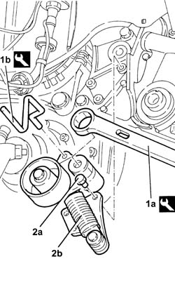
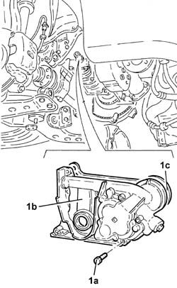
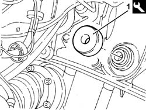
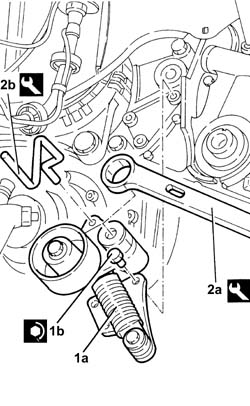

1020D11 front crankshaft oil seal cover-r r and replace seal with timing belt removed-includes cleaning mating surfaces and applying sealant
- Path
- Procedures > 10 ENGINE > 1020 CRANKCASE SUMP AND COVERS > 1020D oil seals on crank shaft > 1020D11 front crankshaft oil seal cover-r r and replace seal with timing belt removed-includes cleaning mating surfaces and applying sealant
- Kind
- repair procedure (removal / refitting; the operation number is the code)
- Applies to
- engines: 2.4 JTD 20v; all production periods
- Interactive page
- https://sloeber94.github.io/elrnDB-a156/en/#/3237875
Applies to: engines: 2.4 JTD 20v; all production periods
 Removing
Removing
 Refitting
RefittingDrain the air conditioner coolant circuit - 0010T84 coolant for air conditioning system dehydrate and recharge .
Proceed with removal 1076B70 exhaust pipe between pre-catalytic converter and catalytic converter - r r .
Proceed with removal 1084A16 oil dip stick pipe - r r .
Proceed with removal 1020A20 crank case oil sump - r + r clean seals for sealant application .
Proceed with removal 5040A10 Air conditioning refrigerant CIRCUIT - Draining and Refilling .
Proceed with removal 5040A26 compressor mount - r r .
Proceed with removal 1032B44 toothed drive pulley - r + r with timing belt removed .
Proceed with removal 1080B40 catalytic pre-converter - r r .
Proceed with removal 1084B30 engine oil filter r r .
Proceed with removal 1084C38 engine oil delivery and return pipes to cooling radiator - r + r .
Proceed with removal 1084B34 cartridge engine oil filter support - r + r .
1. Apply tool (1a) to the mobile tensioner and withdraw tool (1b).
 | Name | Country |
|---|---|---|
1a | Key | 1.860.966.000 |
| Name | Country |
|---|---|---|
1b | Clip | 1.870.645.000 |
2. Undo the bolt (2a) and remove the single drive belt tensioner (2b).

Applies to: engines: 2.4 JTD 20v; all production periods
1. Undo the bolts (1a) and remove the crankshaft front oil seal cover (1b) with oil seal (1c).

Applies to: engines: 2.4 JTD 20v; all production periods
Refitting
RemovingRemove the oil seal from the crankshaft front cover.
Refit the crankshaft front cover and secure with bolts to the specified torque.
 | Fastening | Component | Ø | Value (daNm) |
|---|---|---|---|---|
- | Bolt | CRANKSHAFT FRONT COVER | M6 | 0.9 ÷ 1.1 |
1. Refit a new oil seal using the tool.
| Name | Country |
|---|---|---|
1 | Fitting tool | 1.871.000.500 |

Applies to: engines: 2.4 JTD 20v; all production periods
1. Place the engine components single drive belt moving tensioner (1a) back in its housing and fix it tightening the bolts (1b) to the recommended torque.
| Fastening | Component | Ø | Value (daNm) |
|---|---|---|---|---|
1b | Bolt | SINGLE SERVICES MOBILE BELT TENSIONER | M8 | 2.3 ÷ 2.8 |
2. Apply tool (2a) to the mobile tensioner, then insert tool (2b) into the hole on the mobile tensioner.
| Name | Country |
|---|---|---|
2a | Key | 1.860.966.000 |
| Name | Country |
|---|---|---|
2b | Clip | 1.870.645.000 |

Applies to: engines: 2.4 JTD 20v; all production periods
Proceed with refitting 1084B34 cartridge engine oil filter support - r + r .
Proceed with refitting 1084C38 engine oil delivery and return pipes to cooling radiator - r + r .
Proceed with refitting 1084B30 engine oil filter r r .
Proceed with refitting 1080B40 catalytic pre-converter - r r .
Proceed with refitting 1032B44 toothed drive pulley - r + r with timing belt removed .
Proceed with refitting 5040A26 compressor mount - r r .
Proceed with refitting 5040A10 Air conditioning refrigerant CIRCUIT - Draining and Refilling .
Proceed with refitting 1020A20 crank case oil sump - r + r clean seals for sealant application .
Proceed with refitting 1084A16 oil dip stick pipe - r r .
Proceed with refitting 1076B70 exhaust pipe between pre-catalytic converter and catalytic converter - r r .
Refill the engine oil lubrication system - 0010T11 engine oil check level and top up .
Fill the air conditioner coolant circuit - 0010T84 coolant for air conditioning system dehydrate and recharge .
Topics linked from this page (10)
- 1020A20 crank case oil sump - r + r clean seals for sealant application
- 1032B44 toothed drive pulley - r + r with timing belt removed
- 1076B70 exhaust pipe between pre-catalytic converter and catalytic converter - r r
- 1080B40 catalytic pre-converter - r r
- 1084A16 oil dip stick pipe - r r
- 1084B30 engine oil filter r r
- 1084B34 cartridge engine oil filter support - r + r
- 1084C38 engine oil delivery and return pipes to cooling radiator - r + r
- 5040A10 Air conditioning refrigerant CIRCUIT - Draining and Refilling
- 5040A26 compressor mount - r r